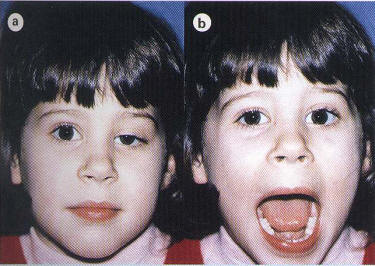
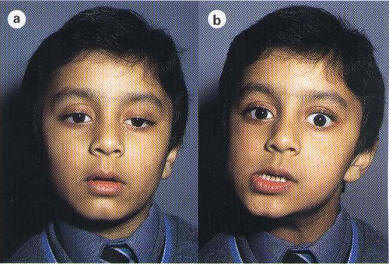

Marcus-Gunn jaw winking syndrome
* Định nghĩa:
+ Hội chứng hàm mắt Marcus-Gunn

Hình: a, Sụp mi mắt Trái b, Há miệng sụp mi biến mất
+ Đây là hiện tượng đồng động trái nghịch giữa mi mắt và hàm, gặp trong một số trường hợp sụp mi bẩm sinh. Sụp mi hết, thậm chí mi trên co rút lại khi bệnh nhân há mồm hoặc đưa hàm về phía đối lập. Hiện tượng ngoài ý muốn này thường một bên nhằm trung hòa sụp mi, đôi khi kèm theo tình trạng trợn to thực sự.
+ Dấu hiệu này ít nhiều khá rõ và không thấy xảy ra ở trẻ ít tuổi. Trong một số trường hợp, hiện tượng Marcus - Gunn xảy ra ở cả 2 mắt và có thể kèm theo một sự suy sụp vận nhãn như liệt cơ thẳng trên.
+ Hiện tượng đồng động này được giải thích bằng sự phân bố thần kinh không bình thường xảy ra giữa những sợi thần kinh dây III chỉ huy cơ nâng mi với nhánh nhai của dây V. Dị tật này đôi khi có tính di truyền.

Hình: a, Sụp mi mắt T b, Đưa hàm dưới sang phía đối diện sụp mi biến mất
(Hình và nội dung được trích từ J. Kanski)